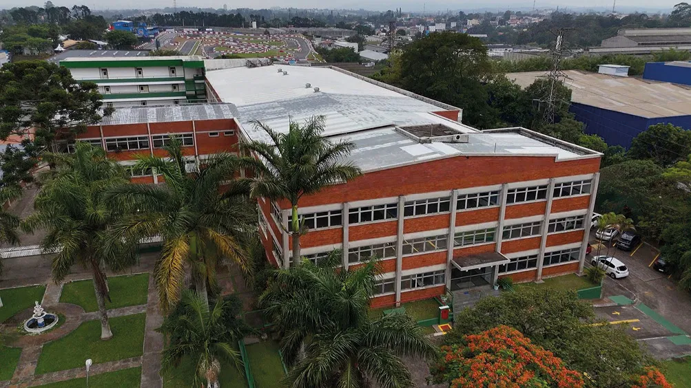

Uma empresa com menos de três anos de mercado. Do outro lado, uma concorrente com três décadas de estrada. O argumento da mais velha era simples — e, em outros tempos, teria funcionado: "Eles são novos demais. Não têm experiência para isso." A comissão de licitação leu os documentos, avaliou o acervo técnico, analisou a proposta. E deu o contrato para a empresa nova.
Essa empresa nova é a Redax Engenharia. E o homem por trás dela, Felipe Antonio Xavier Andrade, não pareceu surpreso com o resultado. Havia calculado cada movimento antes de entrar — como faz sempre. "Me considero um enxadrista", diz, sem alarme na voz. "Antes de participar de qualquer licitação, leio o edital do início ao fim, mapeio cada cláusula como uma peça no tabuleiro, e só entro quando sei que posso vencer. Não tentar. Vencer."
É difícil não querer entender de onde vem essa segurança. Ela não é postura — é trajetória.
Antes da Redax, havia o CREA. O Conselho Regional de Engenharia e Agronomia de São Paulo, onde atuou como servidor público na área de fiscalização por oito anos. Não é pouco tempo — é tempo suficiente para entender, de dentro do sistema, como as normas técnicas são construídas, onde elas são respeitadas e onde são ignoradas. Para perceber quais empresas entregam o que prometem e quais apenas assinam papéis.
Felipe passou pela diretoria do CREA. Absorveu uma visão sistêmica que vai muito além do canteiro de obras: governança, acervo técnico, conformidade com normas, os critérios que separam uma empresa habilitada de uma desclassificada em uma licitação. "Essa experiência me deu algo que nenhum curso substitui", diz. "Eu vi o sistema por dentro. Sei onde estão as oportunidades e sei onde estão as armadilhas." Quando decidiu empreender, carregou esse conhecimento como ativo.
Existe um tipo de mercado que assusta a maioria das empresas pequenas: as licitações públicas. Processos longos, documentação densa, linguagem jurídica que parece projetada para excluir quem não tem um departamento inteiro dedicado ao assunto. Durante décadas, esse mercado foi de grupos estabelecidos que dominavam o jogo por caminhos que a antiga Lei 8.666/93 deixava em aberto. Cartas convite, regimes diferenciados, conversas de corredor que decidiam contratos antes do edital ser publicado.
Em 2021, chegou a Lei 14.133 — a Nova Lei de Licitações. E com ela, as regras mudaram de forma estrutural. O pregão online tornou-se a modalidade preferencial. Um portal nacional centralizou os editais. As exigências técnicas ficaram mais rigorosas — e mais transparentes. Quem domina a documentação, entende as cláusulas e tem o acervo técnico organizado ganhou uma vantagem real sobre quem dependia de atalhos. "O jogo mudou", resume Felipe. "E eu estava preparado para o novo jogo."
É assim que ele se define: um enxadrista. Não porque goste do jogo em si, mas porque a metáfora captura exatamente o que faz antes de assinar qualquer proposta. Lê o edital do início ao fim. Mapeia cada cláusula como uma peça no tabuleiro. Avalia o alcance da documentação da empresa naquele momento específico. E só entra quando calcula que pode vencer — não tentar.
Esse método foi testado de forma contundente quando a Redax — empresa com menos de três anos no mercado — venceu uma licitação na área de combate e prevenção de incêndio contra uma concorrente com 30 anos de estrada. A empresa mais antiga usou como argumento a inexperiência da rival. A comissão técnica olhou para os documentos. E decidiu pelo mérito.
Me considero um enxadrista das obras públicas. Cada cláusula do edital é uma peça no tabuleiro. Não entro num processo licitatório para disputar — entro para vencer. Esse espaço não se herda. Se conquista.
A Redax opera obras em municípios distantes do escritório central, coordenando equipes locais que dependem de orientação técnica precisa para saber o que podem ou não podem executar. Em um projeto recente, a obra estava em Marília. Felipe estava na Região Oeste de São Paulo. O empreiteiro no canteiro — competente na execução, mas sem o respaldo técnico de um engenheiro — precisava saber exatamente quais paredes poderia demolir, quais tubulações podiam ser tocadas, qual era o valor autorizado para aquela etapa. Sem esse ponto focal, qualquer decisão tomada no canteiro vira improviso. E improviso em obra tem nome: problema.
"É o que eu chamo de organização do desorganizado", diz Felipe, com humor. "O cliente muitas vezes chega sem projeto executivo completo, sem planilha de quantitativos, às vezes mandando planta no dia anterior ao início da obra. A Redax entra para estruturar isso — e a partir da estrutura, a obra acontece com segurança técnica e jurídica." É esse modelo de gestão que permite à empresa atender tanto clientes privados quanto contratos públicos sem perder consistência na entrega.
O maior case de sucesso até hoje tem endereço certo: o IFSP, Instituto Federal de São Paulo, Campus Osasco. Em parceria com a JD, empresa vencedora da maior ata do Estado de São Paulo em obras públicas, a Redax foi contratada como empreiteira para executar reformas nos institutos federais. Campus Osasco, Cotia, São Vicente, Carapicuíba — uma rota de obras que foi construindo o nome da empresa no terreno mais disputado do setor.
Existe uma decisão que Felipe menciona com a serenidade de quem sabe que fez a escolha certa — mas também com a consciência de quanto ela custou no curto prazo. Uma incorporadora em São Caetano do Sul havia entregado um edifício com diversas patologias. Vícios construtivos visíveis, itens fora de conformidade, estrutura que exigia intervenção de engenharia real. Felipe foi chamado para "resolver".
Quando chegou ao local, o quadro era claro: a incorporadora não queria engenharia. Queria cobertura. Queria um nome assinado nos documentos para que os problemas parecessem resolvidos sem que a responsabilidade chegasse a quem a gerou. "Tocar naquela estrutura significava assumir a responsabilidade técnica por intervenções que eu não poderia garantir. Meu nome e minha ART não servem para cobrir o que os outros construíram mal", diz. A resposta foi não. Sem drama, sem negociação — não.
No mundo das reformas e construções, saber recusar uma obra é tão importante quanto saber executá-la. O acervo técnico de uma empresa de engenharia — o conjunto de ARTs registradas que comprovam a experiência em determinados tipos de obra — é um ativo que leva anos para construir e pode ser comprometido em uma única decisão equivocada. "Cada obra entregue dentro do escopo correto é um passo que me habilita para a próxima licitação. Cada obra mal assinada pode me tirar do jogo."
A ART não é um papel. É uma reputação comprovada. E reputação não se recupera com desconto no próximo orçamento.
No final de 2025, Felipe embarcou para a China. Não como turista — como profissional. A missão era participar de um processo de certificação de uma das maiores estatais de transmissão e distribuição de energia elétrica do mundo, com operações em Campinas e Paulínia. O que encontrou transformou sua percepção sobre o futuro do setor de uma forma que nenhum congresso ou curso havia conseguido antes.
"Eu tinha uma imagem da China que não correspondia à realidade. Fui e me deparei com um país que respira tecnologia." Uma das cenas que ficaram gravadas na memória: drones industriais — robustos, autônomos, precisos — realizando limpeza e pintura de fachadas de edifícios inteiros. No Brasil, esse mesmo serviço é feito com rapel, andaimes e plataformas elevatórias. A diferença não é só de produtividade. É de segurança. Queda em altura ainda é uma das principais causas de morte na construção civil brasileira. O drone elimina o trabalhador da equação de risco.
Voltou com a certeza de que essa tecnologia chegará ao Brasil — e com a disposição de estar entre os primeiros a trazê-la. "Não penso em expansão para o Paraguai, que é onde muita gente está indo agora. Penso em trazer tecnologia da China para aplicar aqui. O mercado vai chegar lá. A questão é quem chega primeiro." A nova lei de licitações já prevê preferência pelo BIM — o Building Information Modelling — em obras públicas. A onda de digitalização e automação está chegando. Para quem já construiu a base técnica e regulatória, surfar essa onda é questão de posicionamento.
A história de sua entrada no BNI começa com um churrasco e um vizinho chamado Danilo Marques, da Royal Prestige. Foi esperando uma tarde descompromissada. Saiu com um convite para conhecer uma reunião de prospecção do BNI — às 6h30 da manhã, num grupo em Osasco — e teve na recepção um balde de água fria que quase foi embora do conceito por completo. "A cadeira de Reformas e Construções já estava ocupada."
Outro teria desistido, mas tentou mais uma vez — o grupo Conectus, reuniões às 10h da manhã num restaurante de costela em Alphaville. A diferença foi imediata. "Era meu grupo. A energia era completamente diferente. As pessoas se ajudavam de verdade." Em três meses, as indicações recebidas já tinham coberto o valor da anuidade anual.
Para Felipe, o BNI não é apenas uma rede de indicações. É uma estrutura de posicionamento de mercado. "A construção civil é fundamentalmente um negócio de confiança. Ninguém contrata uma construtora porque viu um anúncio. Contrata porque alguém em quem confia indicou." A cadeira de Reformas e Construções dentro do grupo é o ponto de contato com arquitetos, engenheiros elétricistas, fornecedores de materiais, síndicos e gestores — pessoas que, quando alguém da sua rede precisar de uma obra, vão lembrar de um nome. O objetivo é que esse nome seja a Redax.
O relacionamento constrói o negócio antes que o negócio apareça. Quando a necessidade surge, o nome já precisa estar na cabeça de alguém.
Existe uma cena que se repete com frequência dentro do BNI e que Felipe Xavier aprendeu a enxergar com clareza de quem já entendeu o jogo: um arquiteto fecha um projeto com um cliente. O cliente precisa de quem execute. O arquiteto indica a Redax. A Redax entra na obra — e no processo, referencia o marmorista, o vidraceiro, o designer de interiores, o fornecedor de esquadrias. Uma única indicação que entrou pela porta da arquitetura saiu por cinco ou seis outras portas.
"É assim que a construção civil funciona dentro do BNI quando as pessoas entendem o potencial da cadeira", diz Felipe. "Reformas e Construções não é uma cadeira isolada. É um ponto de convergência. Quase toda obra privada passa por aqui em algum momento — e quando passa, ela conecta uma série de outros profissionais que estão na mesma mesa."
Essa visão de cadeia produtiva dentro da rede não é óbvia para quem olha de fora. A tendência natural é enxergar cada cadeira como um fornecedor autônomo — o engenheiro faz a obra, o arquiteto faz o projeto, o marmorista faz o piso, cada um no seu quadrado. O que Felipe descreve é outra coisa: uma teia onde quem está no centro da execução tem visibilidade sobre todas as outras pontas. E quem está no centro da execução, na construção civil, é quem constrói.
"O arquiteto projeta o que eu vou construir. Quando ele me referencia para o cliente, está colocando o nome dele junto com o meu. Então a confiança já vem embutida — não preciso me vender do zero." Essa lógica inverte o processo comercial tradicional. Em vez de prospectar clientes frios, a Redax entra em contatos que já chegam aquecidos pela credibilidade de quem indicou. Em três meses de grupo, as indicações recebidas já cobriam o investimento da anuidade anual. Não por acaso — por posicionamento.
Reformas e Construções não é uma cadeira isolada dentro do BNI. É um ponto de convergência. Quase toda obra privada passa por aqui — e quando passa, conecta uma série inteira de outros profissionais.

O setor de construção civil vive um momento de dupla pressão. De um lado, os números são positivos: crescimento de 4,1% em 2024, mercado imobiliário aquecido, investimentos públicos em infraestrutura que seguem pautados para 2026 e além. De outro, os custos sobem — o Índice Nacional de Custo da Construção (INCC) registrou alta de 6,34% nos últimos 12 meses, acima da inflação oficial — e a escassez de mão de obra qualificada é um gargalo que a CBIC aponta como um dos maiores desafios do setor. O mercado cresce, mas a exigência cresce junto.
É nesse contexto que Felipe encerra a conversa com uma frase que resume não apenas a Redax, mas uma visão de mundo sobre o que significa ser uma empresa nova em um mercado que costuma valorizar o tempo de estrada acima de tudo: "A nova geração de obras públicas não é definida pela idade da empresa. É definida pela mentalidade. Uma empresa de 30 anos que depende de acordos informais está para trás. Uma empresa de três anos que domina o edital, tem o acervo técnico em dia e entende o ambiente regulatório — essa está na frente."
A Redax ainda está no começo do caminho que desenhou. Daqui a cinco anos, Felipe enxerga a empresa como referência consolidada na rede metropolitana oeste de São Paulo. Com processos estruturados. Com parcerias que mapeiam oportunidades licitatórias por município antes que os concorrentes as enxerguem. Com tecnologias que ainda não chegaram ao Brasil, mas que ele já foi buscar. O tabuleiro está montado. As peças estão posicionadas. Felipe Xavier já deu sua abertura — e está jogando para vencer.